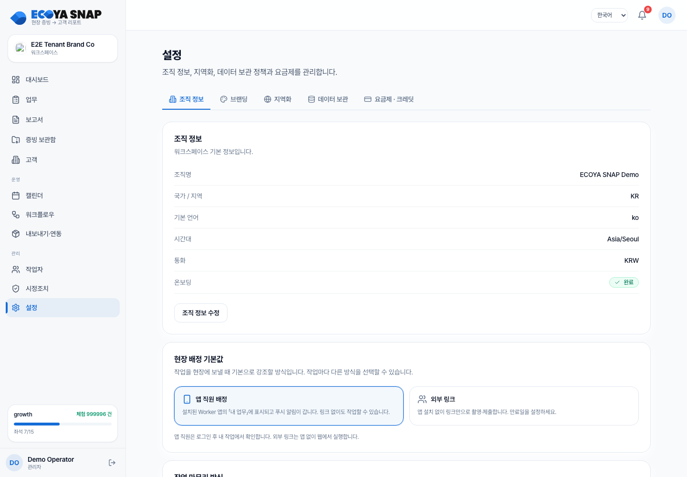

[Web] SC-30 — 설정 (CURRENT_LEGACY 제품 화면)
시작 가이드 반영: COMMON:DEC-QUICKSTART-001
상태: CURRENT_LEGACY / Common 설정으로 통합 대상 대상: admin·owner 목표 경계: Common 설정이 화면·IA와 Organization·구성원·구독·Paddle 결제·인보이스를 소유한다. SNAP은 Common 안 SNAP 구획의 제품별 업무 설정·사용량 의미를 소유한다. 추가 반영: 2026-08-20 Common 설정 진입·제품 사용자 경계
화면 목적
현행 SNAP 조직 설정 화면이다. 목표 구조에서는 별도 설정 셸을 유지하지 않고 Common 설정 안에 책임별 항목을 배치한다.

진입 조건
- 로그인 후 admin·owner 권한과 조직 승인 상태를 확인한 뒤 진입한다.
- 대표 진입 위치: /settings
- 조직·역할·링크 범위를 통과하지 못하면 업무 데이터를 보여주지 않는다.
사용자가 보는 내용과 행동
Common 설정에는
일반,조직,Trade OS,SNAP구획을 단일 깊이로 표시한다.SNAP 구획은 현재 Organization의 SNAP entitlement가 활성일 때만 표시한다.
Organization 정보·사용자 관리·제품 및 구독·결제 및 인보이스는 Common의 조직 구획에서 관리한다.
SNAP 구획에는 현장 운영·제품 브랜딩·보존·데이터·제품 사용량처럼 SNAP이 정의하는 필드만 둔다.
/workers를 SNAP 설정 하위 메뉴로 확정하지 않는다. Organization Member 기능과 SNAP 제품 행위자 기능을 먼저 분리한다.별도 Workspace 메뉴는 만들지 않는다. 조직 전환은 Common Organization 컨텍스트를 사용한다.
조직 > 소유권 이전은 owner에게만 표시한다.멤버 수와 좌석 사용량은 초대 제한 UI로 사용하지 않는다.
화면의 현재 대상과 상태를 먼저 확인한다.
조직·과금·보존·알림 등 고객사 설정을 관리한다.
주 행동의 결과와 다음 이동을 화면에서 확인한다.
실패한 경우 입력과 업무 맥락을 잃지 않고 다시 시도한다.
화면 상태
| 상태 | 제품 동작 |
|---|---|
| 로딩 | 기존 내용을 없는 것으로 표시하지 않고 진행 상태를 보여준다 |
| 정상 | 조직 설정에 필요한 정보와 주 행동을 보여준다 |
| 빈 상태 | 데이터가 없는 이유와 첫 행동 또는 이전 화면 이동을 안내한다 |
| 오류 | 입력·선택을 가능한 한 보존하고 다시 시도할 수 있게 한다 |
| 권한 없음 | 데이터를 노출하지 않고 역할에 맞는 화면 또는 안내로 이동한다 |
이동과 복구
선택한 업무 항목의 상세·검토·설정 또는 이전 목록으로 이동한다.
뒤로 이동하거나 재시도해도 이미 완료된 성공 결과를 중복 실행하지 않아야 한다.
제품 규칙
- 사용자에게는 내부 함수·API·DB 이름이 아니라 업무 의미를 보여준다.
- 성공·실패·권한 없음·데이터 없음 상태를 서로 구분한다.
- 고객과 작업자에게 조직 내부 정보나 AI 실행 맥락을 과도하게 노출하지 않는다.
- 중요 변경과 외부 전달은 성공 응답을 확인한 뒤 완료로 표시한다.
- SNAP entitlement가 없는 Organization에도 Common 설정은 유지하되 SNAP 제품 구획·설정값은 노출하지 않는다.
- 개인 UI 언어·시간대는 Common 계정 기본값이고, 이 화면의 조직 언어·업무 시간대는 SNAP 업무·리포트·알림 기준이다.
- 현행
billing탭의 요금제 구독·체크아웃·Paddle 결제·인보이스는 Common 조직 구획으로 이동한다. SNAP 크레딧 잔액·사용량·원장 의미는 SNAP이 정의하되 Common 설정 IA 안에서 표시한다. 자동 충전의 결제수단·ON/OFF·상한 변경은 Common OWNER capability로만 제공한다. ADMIN에게는 SNAP 제품 capability가 허용한 크레딧 사용량·원장만 표시하고 결제수단·Paddle 상세는 노출하지 않는다.
QA 기준
- 제목과 대상 사용자가 실제 화면과 일치한다.
- 대표 진입과 다음 이동이 끊기지 않는다.
- 로딩·빈 상태·오류·권한 없음이 정상 데이터처럼 보이지 않는다.
- 실패 후 입력·선택·업무 맥락을 복구할 수 있다.
- Web 대표 캡처가 기준 리비전의 화면과 일치한다.
현재 구현 상태
화면 파일과 /settings 연결 경로는 기준 리비전에서 확인했다. 이는 CURRENT_LEGACY 구현 기록이며, 목표 진입은 제품의 설정 메뉴에서 Common 설정으로 이동하는 것이다.
공개 /pricing은 요금제 비교 화면이며 로그인 후 크레딧·결제 기능을 설정 밖으로 이동하지 않는다.
개발 역추적
아래는 재구성 전 문서에 있던 소스 검증 기록이다. 제품 설명과 분리해 보존한다.
기존 소스·API·QA 기록
경계: 고객사 Owner/Admin의 data·retention·residency 설정은 SNAP 제품 정본으로 유지한다. ECOYA 내부 운영자의 감독·집행은 Platform Admin SSOT가 소유한다.
상태: 소스 검증 완료 (설정 전수 추출) · 표면: Web 기준 리비전:
main@02509c7· 검증일 2026-07-27 화면 정본:frontends/ecoya-web/src/pages/Settings.tsx+pages/settings/*.tsxAPI 정본:apps/snap-backend/internal/httpapi/org_settings.go·branding.go·retention.go·plan.go·storage_quota.go관련 결정: OD-001/010/011/012/013/014 확정 ·OD-005(MD_APPLIED)
이 문서의 목적: SNAP의 설정은 한 화면에 모여 있지 않다. 조직 JSONB·별도 테이블·플랫폼 운영자 전용·읽기 전용 카탈로그로 흩어져 있다. 이 문서가 "설정이 어디 있는가"의 전수 지도다.
1. 주소와 접근
| 항목 | 값 | 소스 |
|---|---|---|
| 주소 | /settings |
App.tsx:130 |
| 게이트 | Shell = TenantFlowGuard → ManagerGuard → AppShell |
App.tsx:49-56 |
| 통과 역할 | manager admin owner operator |
ManagerGuard.tsx:7 |
| 내비 위치 | ADMIN_NAV (/workers·/safety/corrective-actions와 같은 그룹) |
AppShell.tsx:45-49 |
| 탭 전환 | ?tab= 쿼리 파라미터. org이 기본이며 이때 쿼리 제거 |
Settings.tsx:33-49 |
통과하지 못하면 화면 대신 rbac.manager_only_title 안내 카드와 로그인 버튼을 본다 (ManagerGuard.tsx:22-33).
⚠️ 화면 게이트는
manager이상이지만 개별 설정 API는 대부분 게이트가 더 강하거나 약하다. §3의 API별 권한 열을 따른다.
2. 탭 구성 (5)
Settings.tsx:22-28의 TABS 배열이 정본이다.
| # | ?tab= |
라벨 키 | 아이콘 | 포함 패널 | 소스 |
|---|---|---|---|---|---|
| 1 | org (기본) |
set.tab_org |
Building2 |
OrgSettingsPanel · FieldDispatchPanel · DeliveryOutcomePanel · DeliveryChannelsPanel · AITextPilotPanel |
Settings.tsx:72-79 |
| 2 | branding |
set.tab_branding |
Palette |
BrandingPanel |
:111 |
| 3 | loc |
set.tab_loc |
Globe |
현지화 (인라인) | :82-99 |
| 4 | data |
set.tab_data |
Database |
DataResidencyPanel · StorageQuotaPanel · DataRetentionPanel · OrgExportPanel · AuditLogPanel |
:101-107 |
| 5 | billing |
set.tab_billing |
CreditCard |
BillingPanel |
:113 |
현행 코드에서 멤버·초대는 이 화면에 없고 별도 최상위 화면 /workers(SC-28)다. 목표 구조는 /workers를 통째로 설정 하위로 옮기지 않는다. Organization Member 기능은 Common으로, SNAP 제품 행위자 기능은 SNAP으로 분리하며 새 화면·경로는 후속 기획에서 확정한다.
3. 설정 저장소 전수 — "설정이 어디 있는가"
설정은 5개 서로 다른 저장 위치에 흩어져 있다.
| # | 저장 위치 | 무엇 | 읽기 API | 쓰기 API | 쓰기 권한 |
|---|---|---|---|---|---|
| S1 | organizations.settings (JSONB) |
조직 프로필·AI 모드·전달 기본값·현장 배정·파일럿·마켓 | GET /org/settings |
PATCH /org/settings |
확인 필요 |
| S2 | organizations.settings->'branding' (JSONB 하위) |
브랜드 이름·색·푸터·로고 | GET /org/branding |
PUT /org/branding, POST /org/branding/logo |
manager+ |
| S3 | organizations.settings->'plan' (JSONB 하위) |
플랜 티어·좌석·Paddle 고객·구독 상태 | GET /org/plan |
테넌트 쓰기 없음 — PUT /ops/tenants/:id/plan (platform_ops) |
운영자 전용 |
| S4 | organizations.settings->'storage_quota' (JSONB 하위) |
저장 쿼터 오버라이드 | (쿼터 조회 경유) | API 없음 — DB 직접 | 없음 |
| S5 | retention_policies (별도 테이블) |
보존 기간 4종 | GET /org/retention-policy |
PUT /org/retention-policy |
manager+ |
3.1 S1 — organizations.settings JSONB 키 전수
소스에서 실제로 접근되는 키 16종 (grep으로 전수 추출):
| 키 | 성격 | PATCH /org/settings로 쓸 수 있나 |
설정 화면에 있나 |
|---|---|---|---|
plan |
플랜·좌석 (S3) | ❌ | 조회만 (billing 탭) |
branding |
브랜딩 (S2) | ❌ (별도 API) | ✅ branding 탭 |
billing |
과금 상태 | ❌ | 조회만 |
storage_quota |
쿼터 오버라이드 (S4) | ❌ | 조회만 (data 탭) |
ai_mode |
mock / live |
✅ | ✅ org 탭 (AITextPilotPanel) |
industry |
업종 | ✅ | ✅ org 탭 |
company_size |
규모 | ✅ | ⬜ 확인 필요 |
use_cases |
용도 | ✅ | ⬜ 확인 필요 |
enabled_workflows |
활성 워크플로 | ✅ | ⬜ 확인 필요 |
field_dispatch |
현장 배정 기본값 | ✅ | ✅ org 탭 (FieldDispatchPanel) |
delivery |
default_outcome_mode·allowed_outcome_modes |
✅ | ✅ org 탭 (DeliveryOutcomePanel) |
delivery_channel_priority |
채널 우선순위 (마켓 프리셋에서 주입) | ❌ (읽기만) | ✅ org 탭 (DeliveryChannelsPanel, 조회) |
storage_region_pin |
데이터 소재지 핀 | ✅ | ✅ data 탭 (DataResidencyPanel) |
recommended_persona_keys |
추천 페르소나 | ❌ | ⬜ |
home_market |
홈 마켓 | ❌ | ⬜ |
auth_provider |
인증 제공자 | ❌ | ⬜ |
pilot_route |
파일럿 라우트 (가입 시 주입) | ❌ | ⬜ |
pilot_delivery_locale |
파일럿 전달 로케일 | ❌ | ⬜ |
onboarding_completed |
CURRENT_LEGACY 강제 설정 완료 플래그 |
✅ | ❌ (목표 시작 가이드 진행률로 사용 금지) |
primary_persona_key |
주 페르소나 | ✅ | ⬜ 확인 필요 |
secondary_persona_keys |
부 페르소나 | ✅ | ⬜ 확인 필요 |
name website country_code default_language timezone |
조직 프로필 (일부는 organizations 컬럼) |
✅ | ✅ org 탭 |
3.2 PATCH /org/settings가 받는 필드 전체
org_settings.go 익명 struct 전수:
name · website · country_code · default_language · timezone
company_size · industry · use_cases
ai_mode · enabled_workflows
primary_persona_key · secondary_persona_keys
onboarding_completed (`CURRENT_LEGACY`) · storage_region_pin
delivery.{ default_outcome_mode, allowed_outcome_modes }
field_dispatch.{ default }
모두 포인터 타입(*string, *[]string)이다 — 즉 보낸 필드만 갱신하고 나머지는 건드리지 않는다.
실제 쓰기는 merge[...]로 JSONB에 병합된다. 병합 키 9개:
ai_mode · company_size · delivery · enabled_workflows
field_dispatch · industry · storage_region_pin · use_cases · website
검증: allowed_outcome_modes가 빈 배열이면 400 allowed_outcome_modes_required (org_settings.go:110-111).
3.3 S5 — retention_policies 테이블 (별도)
JSONB가 아니라 독립 테이블이다. 조직당 1행 (organization_id PRIMARY KEY).
| 컬럼 | 기본값 | 의미 |
|---|---|---|
original_media_days |
365 | 원본 미디어 최소 보존 |
report_days |
1825 (약 5년) | 리포트 보존 |
share_link_days |
30 | 이 기간 지난 링크 자동 만료 |
archive_after_days |
180 | 이 기간 후 콜드·아카이브 이동 |
| API | 권한 |
|---|---|
GET /api/v1/org/retention-policy |
조직 RLS만 (역할 게이트 없음) |
PUT /api/v1/org/retention-policy |
manager+ |
⚠️ 현행
GET에 역할 게이트가 없어 작업자도 조직 보존 정책을 조회할 수 있다. OD-006 확정 정책의 admin+ 최소 권한과 다른IMPLEMENTATION_GAP이다.
3.4 S2 — 브랜딩 필드
putOrgBranding이 받는 필드 (branding.go):
name · color · footer
로고는 별도 업로드: POST /org/branding/logo → 조회 GET /org/branding/logo. 공개 표면에서는 GET /public/links/:token/logo·/share/:token/logo로 노출된다 (routes.go:241, :273).
3.5 S3 — 플랜 (테넌트가 못 바꾼다)
| 항목 | 값 |
|---|---|
| 저장 | organizations.settings->'plan' |
| 조회 | GET /api/v1/org/plan — 역할 게이트 없음 |
| 변경 | PUT /api/v1/ops/tenants/:id/plan — platform_ops 전용 |
| 필드 | tier plan_key checkout_status subscription_status paddle_customer_id + 계산값 seats·seats_used·seats_available·unlimited·in_trial |
설계 의도가 코드 주석에 있다 (plan.go:31-34): 플랜 티어는 ECOYA 운영자가 설정하고(Paddle 구독과 연동된 상업적 결정), 테넌트는 멤버 추가·초대로 좌석을 소비한다.
좌석 계산 (plan.go:122-133):
members = COUNT(*) FROM users WHERE organization_id=$1 AND COALESCE(status,'active') <> 'inactive'
invites = COUNT(*) FROM org_invites WHERE organization_id=$1 AND status='pending'
seats_used = members + invites
현행 계산은 역할을 구분하지 않아 작업자도 좌석을 소비한다. OD-012 확정 정책은 멤버 무제한·좌석 초대 차단 없음이며 현행은 IMPLEMENTATION_GAP이다.
3.6 S4 — 저장 쿼터 오버라이드 (API 없음)
resolveStorageLimits(storage_quota.go:54-70) 우선순위:
| 순위 | 조건 | source |
|---|---|---|
| 1 | settings->'storage_quota'->'bytes_limit' > 0 |
override |
| 2 | 티어에 정책 쿼터 존재 | plan |
| 3 | 그 외 | default |
1번을 설정할 API가 없다. DB 직접 수정만 가능하다 → TR-019
4. 설정처럼 보이지만 설정이 아닌 것 (읽기 전용 카탈로그)
아래는 조직이 바꿀 수 없는 전역 카탈로그다. 설정 화면에서 값을 고르는 데 쓰이지만 그 자체는 설정이 아니다.
| API | 내용 | 권한 |
|---|---|---|
GET /api/v1/constants |
통제 어휘 19종 117값 | 비인증 공개 |
GET /api/v1/i18n·/i18n/:locale |
메시지 카탈로그 | 비인증 공개 |
GET /api/v1/markets |
글로벌 마켓 프리셋 (KR/JP/SG/AU/TH) | 비인증 공개 |
GET /api/v1/markets/suggest |
가입 마켓 추천 | 비인증 공개 |
GET /api/v1/task-type-schemas |
페르소나 스키마 | 비인증 공개 |
GET /api/v1/report-templates |
리포트 템플릿 | 비인증 공개 |
GET /api/v1/report-templates/resolve |
템플릿 해석 (customer > org > global) | 조직 RLS |
GET /api/v1/report-profiles |
목적 프로파일 | 조직 RLS |
GET /api/v1/org/localization |
테넌트 현지화 해석 결과 | 조직 RLS |
GET /api/v1/billing/plans |
플랜 카탈로그 | 비인증 공개 |
예외 — 조직이 만들 수 있는 것: POST /api/v1/report-templates로 조직·고객 단위 템플릿 오버라이드를 만든다 (routes.go:76, admin).
5. 설정 화면에 없는 관리 기능
같은 ADMIN_NAV 그룹이거나 설정에 있을 것으로 기대되지만 다른 위치에 있는 것들이다.
| 기능 | 실제 위치 | API | 결정 |
|---|---|---|---|
| 멤버 목록·역할 변경·비활성화 | /workers (SC-28) |
GET/PATCH/DELETE /org/members* |
CURRENT_LEGACY; 목표는 Common 사용자 관리, 새 route는 migration에서 확정 |
| 초대 발급·취소 | /workers (SC-28) |
POST /auth/invites, POST /org/invites/:id/revoke |
CURRENT_LEGACY; Organization 초대는 Common으로 분리 |
| 합류 승인 | /workers (SC-28) |
POST /org/members/:id/approve-join |
CURRENT_LEGACY; 제품 행위자 등록·승인은 별도 SNAP 계약 |
| OWNER 추가·이전 | 현행 기능 없음 | 없음 | Common에서 활성 Member의 OWNER 지정과 마지막 OWNER 보호로 처리 |
| 감사 로그 조회 | 설정 data 탭 (AuditLogPanel) |
GET /org/audit-logs (admin+) |
OD-014 §4 |
| 조직 데이터 내보내기 | 설정 data 탭 (OrgExportPanel) |
GET /org/export (admin+) |
— |
| 삭제 요청 | 설정에 없음 | POST /deletion-requests |
OD-014 |
| 보존 스윕 실행 | 설정에 없음 | POST /retention/sweep |
OD-014 |
| 시정조치 | /safety/corrective-actions (SC-29) |
GET /ops/corrective-actions |
— |
| 워크스페이스 | 도입하지 않음 | 없음 | Organization을 테넌트·과금 단위로 유지 |
| 워터마크 조직 정책 | 설정 UI 없음 — watermark.EffectivePolicy가 OrgPolicy를 읽지만 설정 경로 미확인 |
미확인 | TR-020 |
| 전달 채널 우선순위 변경 | 조회만 (마켓 프리셋에서 주입) | 쓰기 API 없음 | OD-014 |
6. 플랫폼 운영자 전용 설정 (테넌트 화면 밖)
platform_ops만 접근한다. 테넌트 설정 화면에 절대 나타나지 않는다.
| 설정 | API |
|---|---|
| 테넌트 플랜·좌석 변경 | PUT /api/v1/ops/tenants/:id/plan |
| 테넌트 정지 / 복구 | POST /api/v1/ops/tenants/:id/suspend · /reactivate |
| 크레딧 수동 조정 (±100,000, 사유 필수) | POST /api/v1/ops/tenants/:id/credit-adjust |
| 가입 승인 / 거절 | POST /api/v1/ops/pending-signups/:org_id/approve · /reject |
| 외부 연동 준비도 (env 존재만) | GET /api/v1/ops/integrations |
| AI 원가 대비 마진 | GET /api/v1/ai/unit-economics |
| 과금 준비도 | GET /api/v1/ops/billing-readiness |
7. env 기반 설정 (코드·DB 아님)
config 패키지(401줄, 미정독)가 다룬다. 화면에서 바꿀 수 없다.
| 변수 | 영향 |
|---|---|
LLM_MODE |
mock(기본, 외부 호출 없음) / live |
APP_ENV |
local이면 X-Role 헤더 인증 허용 |
PLATFORM_OPS_ENABLED |
운영자 평면 활성화 |
PLATFORM_OPS_ORG_ID |
운영 조직 지정 — 이 조직의 admin만 운영자 |
TRUSTED_PROXIES |
X-Forwarded-For 신뢰 범위 (잘못되면 프록시 전체 불신으로 fail-safe) |
METRICS_TOKEN |
/metrics 노출 |
PADDLE_API_KEY · PADDLE_WEBHOOK_SECRET |
과금 |
FIREBASE_* |
인증 |
STORAGE_* |
저장소 |
SMTP_* |
이메일 |
| 레이트리밋 RPM 3종 | PublicRateLimitRPM · AuthRateLimitRPM · ExpensiveRateLimitRPM |
8. 설정 전체 지도 (요약)
설정
├── 테넌트가 바꿀 수 있는 것
│ ├── organizations.settings (JSONB) ← PATCH /org/settings (9키 병합)
│ │ ├── 조직 프로필 (name·website·country·language·timezone)
│ │ ├── ai_mode (mock/live) ← OD-005/OD-014 검토 대상
│ │ ├── delivery.{default,allowed} outcome modes
│ │ ├── field_dispatch.default
│ │ ├── storage_region_pin
│ │ └── industry · company_size · use_cases · enabled_workflows · persona_keys
│ ├── organizations.settings->'branding' ← PUT /org/branding (name·color·footer) + 로고 업로드
│ └── retention_policies (별도 테이블) ← PUT /org/retention-policy (4개 기간)
│
├── 조회만 가능한 것
│ ├── settings->'plan' (티어·좌석) ← 운영자가 설정
│ ├── settings->'storage_quota' (오버라이드) ← API 없음, DB 직접
│ ├── delivery_channel_priority ← 마켓 프리셋 주입
│ └── pilot_route · pilot_delivery_locale · home_market · auth_provider
│
├── 플랫폼 운영자 전용 ← /platform* (SC-31~36)
│ └── 플랜·정지·크레딧조정·가입승인·연동준비도·AI마진
│
├── env (코드 배포 시점)
│ └── LLM_MODE · APP_ENV · PLATFORM_OPS_* · 레이트리밋 · 외부 서비스 키
│
└── 존재하지 않는 것 (확정 정책의 구현 차이)
├── 소유권 이전 → OD-010 `IMPLEMENTATION_GAP`
├── 별도 SNAP 워크스페이스 → OD-013에 따라 만들지 않음
├── 워터마크 조직 정책 UI → TR-020 `IMPLEMENTATION_GAP`
├── 저장 쿼터 오버라이드 UI → TR-019 `IMPLEMENTATION_GAP`
└── 전달 채널 우선순위 쓰기 → OD-014 `IMPLEMENTATION_GAP`
9. QA 인수 조건
| # | 조건 | 기대 |
|---|---|---|
| S1 | worker 세션으로 /settings 접근 |
rbac.manager_only_title 안내 카드 |
| S2 | ?tab=org으로 진입 |
쿼리가 제거되고 기본 탭 표시 |
| S3 | ?tab=billing으로 직접 진입 |
billing 탭이 열림 |
| S4 | 알 수 없는 ?tab=xyz |
동작 확인 필요 (⬜ 미검증) |
| S5 | PATCH /org/settings에 industry만 전송 |
나머지 키 보존 (포인터 필드 + merge) |
| S6 | allowed_outcome_modes: [] 전송 |
400 allowed_outcome_modes_required |
| S7 | manager(비 admin) 세션으로 GET /org/audit-logs |
403 (admin+ 요구) |
| S8 | manager 세션으로 PUT /org/retention-policy |
성공 |
| S9 | worker 세션으로 GET /org/retention-policy |
현행 성공, 목표는 403 — IMPLEMENTATION_GAP |
| S10 | 테넌트 세션으로 플랜 티어 변경 시도 | 경로 없음 (운영자 전용) |
| S11 | POST /org/branding/logo에 큰 파일 |
크기 제한 동작 (⬜ 미검증) |
| S12 | 설정 화면에서 소유권 이전 찾기 | 현행 없음, 목표는 조직 > 소유권 이전 — IMPLEMENTATION_GAP |
| S13 | 설정 화면에서 멤버 관리 찾기 | 현행 없음, 목표는 SNAP > 멤버·초대에서 /workers 진입 — IMPLEMENTATION_GAP |
| S14 | 보존 기간을 0으로 설정 | 검증 동작 확인 필요 (⬜ 미검증) |
10. 미검증 항목
| # | 항목 | 필요 작업 |
|---|---|---|
| 1 | PATCH /org/settings의 실제 권한 게이트 |
핸들러 ensureRole 확인 — 권한 행렬에서 "RLS만"으로 나왔으나 재확인 필요 |
| 2 | loc 탭의 인라인 필드 구성 |
Settings.tsx:82-99 정독 |
| 3 | 각 패널의 필드·검증·오류 문구 | pages/settings/*.tsx 6개 파일 정독 |
| 4 | AITextPilotPanel이 노출하는 값 |
AI 비가시성 정책과 대조 (OD-005 CLOSED, OD-014 §3) |
| 5 | 알 수 없는 ?tab= 처리 |
Settings.tsx:33-49 |
| 6 | 워터마크 조직 정책 설정 경로 | watermark.Input.OrgPolicy를 채우는 코드 추적 |
| 7 | 로고 업로드 크기·형식 제한 | uploadOrgLogo 정독 |
| 8 | 보존 기간 값 검증 범위 | putRetentionPolicy 정독 |
| 9 | i18n 키 전수 (set.*) |
카탈로그 대조 |
| 10 | 설정 변경의 감사 이벤트 | audit.Log 호출 여부 확인 |